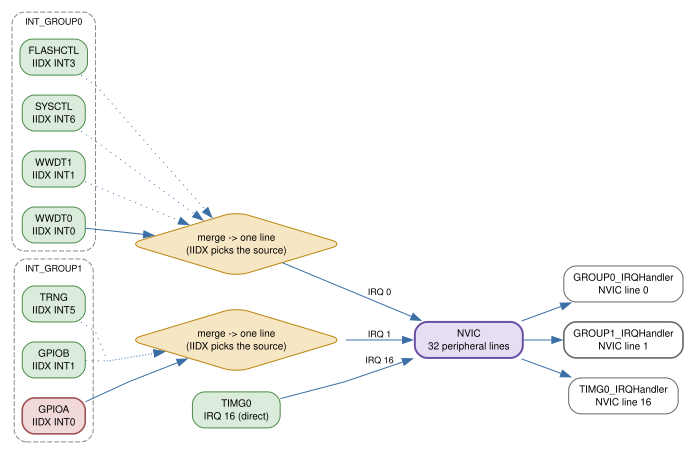
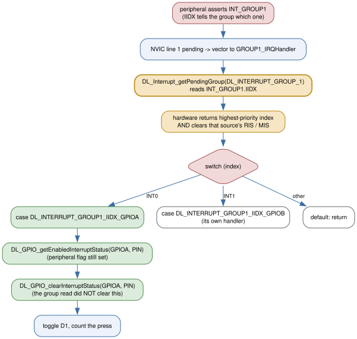

6 — Interrupts and the NVIC¶
Wire a pushbutton to PA12, turn on its interrupt, and write the function your
intuition reaches for — GPIOA_IRQHandler — and it will never be called. Not “called late”, not “called with a stale flag”: never. The linker
will quietly throw it away. That is not a quirk of this board or of DriverLib;
it is how the Cortex-M0+ vector table works once a device has more interrupt
sources than the CPU has vector slots.
By the end of this chapter you will know why that handler is dead, what to
write instead, and how to find out which of several peripherals sharing one
slot actually fired. You will have built a pushbutton example whose handler is
named after the group, not the peripheral, and you will have reproduced the
trap deliberately and watched the LED stop responding. Along the way you will
meet the two masks every interrupt needs, the four priority levels, and the
SCB->VTOR trick for moving the vector table into RAM.
The chapter has one idea, and everything else is that idea applied:
The vector table has one slot per NVIC interrupt line, not one per peripheral. Many peripherals share a line; the group’s
IIDXregister is the switchboard that tells you which one fired.
32 slots, more than 32 sources¶
Start with the number that causes the trouble. The Cortex-M0+ nested vectored
interrupt controller (NVIC) has 32 native peripheral interrupt inputs
(TRM Section 3.3.1, Peripheral Interrupts (IRQs)). The MSPM0G3507 has more
peripherals than that. So TI grouped the low-priority ones: several peripheral
interrupt lines are merged by an interrupt group (INT_GROUP) into a
single NVIC input, and the CPU sees only the group’s line. The grouping is
described in TRM Section 3.3.1.2, Interrupt Groups.

The G3507 exposes two groups plus a set of ungrouped sources. The datasheet’s
interrupt vector table (sources/datasheet/mspm0g3507.txt, Table 8-7,
Interrupt Vector Number) is the authoritative mapping, and the compiler’s
IRQn_Type enum in
sources/mspm0-sdk/source/ti/devices/msp/m0p/mspm0g350x.h spells out the
collision. Read these lines:
/* mspm0g350x.h:75-85 */
SYSCTL_INT_IRQn = 0, /* 16 SYSCTL_INT Interrupt */
WWDT1_INT_IRQn = 0, /* 16 WWDT1_INT Interrupt */
WWDT0_INT_IRQn = 0, /* 16 WWDT0_INT Interrupt */
FLASHCTL_INT_IRQn = 0, /* 16 FLASHCTL_INT Interrupt */
DEBUGSS_INT_IRQn = 0, /* 16 DEBUGSS_INT Interrupt */
GPIOB_INT_IRQn = 1, /* 17 GPIOB_INT Interrupt */
GPIOA_INT_IRQn = 1, /* 17 GPIOA_INT Interrupt */
...
Every *_IRQn on the left is a different peripheral, but they are not
different interrupts: WWDT0, WWDT1, SYSCTL, FLASHCTL, and DEBUGSS are
all IRQ 0, and GPIOA and GPIOB (with TRNG and the comparators) are
all IRQ 1. The enum gives each peripheral a friendly name, but those five
entries collapse to just one line, IRQ 0, and the GPIO entries to just IRQ 1.
The ungrouped peripherals keep their own lines (2–31).
That is why NVIC_EnableIRQ(GPIOA_INT_IRQn) is not “enable GPIOA” — it is
“enable NVIC line 1”, the same line GPIOB_INT_IRQn names. And it is why the
startup file
(sources/mspm0-sdk/source/ti/devices/msp/m0p/startup_system_files/gcc/startup_mspm0g350x_gcc.c)
contains GROUP0_IRQHandler and GROUP1_IRQHandler but no GPIOA_IRQHandler:
/* startup_mspm0g350x_gcc.c:68-69, 115-116 */
extern void GROUP0_IRQHandler (void) __attribute__((weak, alias("Default_Handler")));
extern void GROUP1_IRQHandler (void) __attribute__((weak, alias("Default_Handler")));
...
GROUP0_IRQHandler, /* GROUP0 interrupt handler */
GROUP1_IRQHandler, /* GROUP1 interrupt handler */
You met this mechanism in Chapter 2: each handler is a weak alias to a
do-nothing trap, so defining the same name yourself lets the linker prefer
yours. For a grouped source there is nothing else to define. A function named
GPIOA_IRQHandler matches no entry in interruptVectors, so under the
Makefile’s --gc-sections it is discarded before the image is even built.
GROUP1_IRQHandler is the only handle you get.
Two masks, and you must turn both¶
An interrupt reaches the CPU only if it is enabled in two independent places, and they are configured by different code.
At the peripheral, the source has to be unmasked inside the peripheral’s own interrupt registers. For GPIO that is:
/* ti/driverlib/dl_gpio.h */
__STATIC_INLINE void DL_GPIO_enableInterrupt(GPIO_Regs* gpio, uint32_t pins);
gpio— the register-overlay pointer for the port (GPIOA,GPIOB,GPIOC).pins— a bitwise OR ofDL_GPIO_PIN_*; hereDL_GPIO_PIN_12(dl_gpio.h:132defines it as0x00001000).Returns
void.How it works: it ORs
pinsinto the port’sCPU_INT.IMASKregister (dl_gpio.h:2580). Only masked-in pins can drive the port’s interrupt line.
There is a mirror, DL_GPIO_disableInterrupt(GPIO_Regs* gpio, uint32_t pins)
(dl_gpio.h:2590).
At the NVIC, the line has to be enabled, and that is a CMSIS call, not a
DriverLib one. The dl_interrupt.h header says so plainly in its own overview:
the module “is not for controlling the NVIC or the I-bit in the CPSR register”
— use the CMSIS-Core APIs from
sources/mspm0-sdk/source/third_party/CMSIS/Core/Include/core_cm0plus.h.
/* core_cm0plus.h — public macro aliases (lines 695-703) onto __NVIC_* (lines 741+) */
__STATIC_INLINE void __NVIC_EnableIRQ(IRQn_Type IRQn);
__STATIC_INLINE void __NVIC_DisableIRQ(IRQn_Type IRQn);
IRQn— a member ofIRQn_Type(mspm0g350x.h:68), e.g.GPIOA_INT_IRQn. The functions no-op for negative values, so you may pass a system exception number harmlessly.Returns
void(the getters returnuint32_t:1/0).How it works:
EnableIRQsets the line’s bit inNVIC->ISER[0];DisableIRQsets it inNVIC->ICER[0]. The NVIC maps line 0 to bit 0, line 31 to bit 31 (TRM 3.3.1.1).
Why two? The TRM’s note in 3.3.1.1 is direct about the failure mode: if a
peripheral asserts its line but the line is disabled only at the NVIC, the
interrupt goes pending but never runs, and the wake-up controller keeps
holding an event for the processor, so the part may stay in a higher power
mode than you intended. The SDK’s nvic_interrupt_disable example makes the
same point in its source comment: mask at the peripheral, not just the NVIC.
For this chapter’s example both masks are on; the difference matters once you
start putting the device to sleep (Chapter 21).
The enable order does not matter much, but clear any stale flag before you enable. This is also where the group search starts in the field: if an interrupt “doesn’t fire”, check the peripheral mask, then the NVIC bit, then the priority, in that order.
Priorities are four values, and a group cannot preempt itself¶
The NVIC lets you set a priority per line — but only four levels exist. The device header defines the number of implemented priority bits:
/* mspm0g350x.h:183 */
#define __NVIC_PRIO_BITS 0x0002U /* Number of bits used for Priority Levels */
Two bits means four levels. NVIC_SetPriority takes the small number and
shifts it into the register for you:
/* core_cm0plus.h */
__STATIC_INLINE void __NVIC_SetPriority(IRQn_Type IRQn, uint32_t priority);
__STATIC_INLINE uint32_t __NVIC_GetPriority(IRQn_Type IRQn);
priority— the logical level,0–3. The implementation writespriority << (8 - __NVIC_PRIO_BITS), so level1becomes0x40in the register. Lower value means higher priority (TRM 3.3.1.1); the raw levels in the register are0,64,128,192.Returns
voidfor the setter;uint32_t(the un-shifted level) for the getter.Caveat from the TRM: do not change a line’s priority while that interrupt is enabled or active — behavior is unpredictable. Set priorities before you enable.
Two rules follow that surprise people. First, if two pending interrupts share a
priority level, the one with the lowest exception number is taken first.
Second — and this is specific to grouping — the sources inside one group
cannot preempt each other (TRM 3.3.1.2, Usage). If WWDT0 is being
serviced through GROUP0 and SYSCTL asserts, SYSCTL waits: the two are one
NVIC line, and the CPU is already in that line’s handler. It is serviced on the
next entry (tail-chained), not in the middle of the first.
Dispatch: read the group, then the source¶
GROUP1_IRQHandler runs for any of GPIOA, GPIOB, TRNG, or the comparators.
Its first job is to ask the group which of them fired:
/* ti/driverlib/m0p/dl_interrupt.h */
__STATIC_INLINE uint32_t DL_Interrupt_getPendingGroup(DL_INTERRUPT_GROUP group);
group—DL_INTERRUPT_GROUP_0orDL_INTERRUPT_GROUP_1(dl_interrupt.h:234).Returns the highest-priority pending index in that group, as one of the
DL_INTERRUPT_GROUPn_IIDX_*macros (dl_interrupt.h:81-158), or0if nothing is pending.How it works: it reads the group’s
IIDXregister (dl_interrupt.h:281). The read is not passive: hardware returns the highest-priority source and simultaneously clears that source’sRISandMISbits — that is the whole reason the register exists (TRM 3.3.1.2). So one call both identifies and acknowledges the group’s pending source.

For this example, DL_INTERRUPT_GROUP1_IIDX_GPIOA (dl_interrupt.h:118) is the
value to match. Two related calls exist for when you want to see or clear more
than one bit at a time:
/* ti/driverlib/m0p/dl_interrupt.h */
static inline uint32_t DL_Interrupt_getStatusGroup(
DL_INTERRUPT_GROUP group, uint32_t interruptMask);
static inline void DL_Interrupt_clearGroup(
DL_INTERRUPT_GROUP group, uint32_t interruptMask);
interruptMask is a bitwise OR of the DL_INTERRUPT_GROUPn_* macros
(dl_interrupt.h:168-227). getStatusGroup returns the masked pending bits;
clearGroup ORs them into the group’s ICLR.
Trap inside the trap. The IIDX values and the interruptMask bits are
not the same numbers. IIDX is a 1-based index (INT0 = 1, INT1 = 2,
INT2 = 3), while a mask is a bit position (INT0 = 1, INT1 = 2,
INT2 = 4). They agree for the first two entries and diverge after that. The
header gives them separate macro families precisely so you never pass one where
the other is expected — but if you hand-roll a 1 << iidx you will get this
wrong.
Once you know the source, the peripheral’s own flag is still set. Reading the
group’s IIDX clears the group, not GPIOA’s flag, so you finish at the
peripheral:
/* ti/driverlib/dl_gpio.h */
__STATIC_INLINE uint32_t DL_GPIO_getEnabledInterruptStatus(
GPIO_Regs* gpio, uint32_t pins);
__STATIC_INLINE void DL_GPIO_clearInterruptStatus(GPIO_Regs* gpio, uint32_t pins);
pins— a bitwise OR ofDL_GPIO_PIN_*to select which pins to inspect or clear.getEnabledInterruptStatusreturnsgpio->CPU_INT.MIS & pins, i.e. only the pending flags that are also enabled;clearInterruptStatusreturnsvoidand ORspinsintoICLR(dl_gpio.h:2631,:2699).Caveat: if you clear a flag while the cause is still present (a held button, a level), hardware sets it again. Edge-triggered inputs like this one clear cleanly; level-triggered conditions do not, and you must resolve the condition first.
Falling, rising, or both¶
A GPIO interrupt needs an edge. The feature is chosen with:
/* ti/driverlib/dl_gpio.h */
__STATIC_INLINE void DL_GPIO_setLowerPinsPolarity(
GPIO_Regs* gpio, uint32_t polarity);
__STATIC_INLINE void DL_GPIO_setUpperPinsPolarity(
GPIO_Regs* gpio, uint32_t polarity);
Splitting on pin number is deliberate:
setLowerPinsPolaritycovers DIO 0–15,setUpperPinsPolaritycovers DIO 16–31, and each writes a differentPOLARITYregister (dl_gpio.h:2390,:2403).polarity— a bitwise OR ofDL_GPIO_EDGE_POLARITYvalues. These are named per pin:DL_GPIO_PIN_12_EDGE_FALL,..._EDGE_RISE,..._EDGE_RISE_FALL,..._EDGE_DISABLE(dl_gpio.h:477-492).Returns
void.
For a momentary button pulling a pulled-up pin to ground, the useful edge is the falling one — the press. Rising-edge (or both) is the right choice when the electrical idle state is the opposite, and a floating switch wants an internal pull so the idle level is defined:
/* ti/driverlib/dl_gpio.h */
__STATIC_INLINE void DL_GPIO_initDigitalInputFeatures(uint32_t pincmIndex,
DL_GPIO_INVERSION inversion, DL_GPIO_RESISTOR internalResistor,
DL_GPIO_HYSTERESIS hysteresis, DL_GPIO_WAKEUP wakeup);
pincmIndex— the IOMUX pin-control index, not a pin mask: PA12 isIOMUX_PINCM34(mspm0g350x.h:804). The same namespace split Chapter 4 warned about for outputs.inversion—DL_GPIO_INVERSION_ENABLE/_DISABLE.internalResistor—DL_GPIO_RESISTOR_NONE/_PULL_UP/_PULL_DOWN(dl_gpio.h:1604).hysteresis—DL_GPIO_HYSTERESIS_ENABLE/_DISABLE.wakeup—DL_GPIO_WAKEUP_DISABLE, or one of..._ON_0/..._ON_1/..._ENABLEto make the pin wake the device from STOP/STANDBY (dl_gpio.h:1627).Returns
void. It assigns the wholePINCMregister, so do it before any other per-pin configuration you expect to survive.
Global masking, when you need atomicity¶
Sometimes you need to stop all interrupts for a few instructions — to check a
flag and act on it without a race. That is the CPU’s PRIMASK, exposed as four
intrinsics from the CMSIS cmsis_gcc.h:
/* core/Include/cmsis_gcc.h */
__STATIC_FORCEINLINE void __enable_irq(void); /* line 196 */
__STATIC_FORCEINLINE void __disable_irq(void); /* line 207 */
__STATIC_FORCEINLINE uint32_t __get_PRIMASK(void); /* line 449 */
__STATIC_FORCEINLINE void __set_PRIMASK(uint32_t priMask); /* line 479 */
__disable_irq() sets PRIMASK (mask everything except NMI and HardFault);
__enable_irq() clears it. Because you often call these from code whose caller
already had interrupts off, save and restore rather than blanket-enable:
uint32_t primask = __get_PRIMASK();
__disable_irq();
/* ... short critical section ... */
__set_PRIMASK(primask); /* restore whatever it was, on or off */
This is a blunt instrument. It protects a few instructions, not a long computation; for anything longer you are better off masking one peripheral and leaving the rest of the system alive.
Moving the vector table to RAM¶
The vector table normally lives in flash at address 0x00000000; Chapter 2
showed it. --gc-sections cannot delete it because the linker script wraps it
in KEEP, and it contains weak aliases, so you replace handlers at build time
by defining their names. There is a second, run-time path:
/* ti/driverlib/m0p/dl_interrupt.h */
void DL_Interrupt_registerInterrupt(uint32_t exceptionNumber, void (*intHandler)(void));
void DL_Interrupt_unregisterInterrupt(uint32_t exceptionNumber);
exceptionNumber— the NVIC number,0–31(IRQn_Typevalues are already in this numbering).intHandler— the function to install;unregisterputsDefault_Handlerback.Returns
void.How it works (
dl_interrupt.c:49-68): the first call copies all 48 vectors out ofSCB->VTOR(which at reset is0x00000000) into a RAM array in section.vtable, then pointsSCB->VTORat that array. After that, changing a handler is a store. The linker script provides the home:
.vtable (_vtable_base_address) (NOLOAD) : ... /* default 0x20200000 */
Caveat: this only makes sense for the runtime case. If the handler is known at build time, put its name in the startup file’s table and skip the RAM table entirely — the header says as much. The feature exists because Cortex-M0+ has no other way to swap a handler on the fly.
That is the dl_interrupt.h surface: the group dispatch calls, the two group
macro families, and the two relocation calls. Everything else about interrupts
on this device is either a peripheral-side call like the GPIO ones above, or a
CMSIS NVIC call.
Common mistakes¶
Writing GPIOA_IRQHandler. The vector table has no such entry, so the
handler is dead code and the group falls back to Default_Handler (an infinite
loop). If an interrupt fires and your program appears to hang, look for this
first.
Enabling only one of the two masks. NVIC_EnableIRQ without
DL_GPIO_enableInterrupt leaves the peripheral silently masked; the peripheral
call without the NVIC call leaves the line pending forever. The TRM’s note adds
a power cost to disabling only at the NVIC.
Confusing the IIDX index with the interrupt mask. DL_INTERRUPT_GROUP1_IIDX_GPIOA
is 1, but that is an index, not a bit. IIDX INT2 is 3; the mask for
INT2 is 4. Use the header’s two macro families and never 1 << iidx.
Forgetting to clear the peripheral flag. Reading the group IIDX clears
the group, not GPIOA. If you skip DL_GPIO_clearInterruptStatus, the port’s
flag stays set and the interrupt re-asserts immediately.
Setting a priority while the interrupt is enabled or active. The TRM says
this is unpredictable. Set priorities before NVIC_EnableIRQ.
Expecting one grouped source to preempt another. They share an NVIC line, so they cannot (TRM 3.3.1.2). Sources you need to preempt must be ungrouped.
Reading GPIOA and concluding which pin fired without turning both masks
on. DL_GPIO_getEnabledInterruptStatus returns only enabled pending flags;
a pin whose interrupt you never enabled will not appear, which is correct but
easy to misread as “the button isn’t working”.
Exercises¶
Before reading further, predict: with
USE_PERIPHERAL_NAMED_HANDLERset to1, does the program compile? Where does the button interrupt go? (Answer: yes, it compiles;--gc-sectionsdrops the dead handler and the group vectors to the weakDefault_Handler, which loops forever.)Rebuild with the trap switch on and use
arm-none-eabi-nm build/nvic-grouping.elf. Which interrupt symbols survive? Then set it back to0and compare. What happened toGPIOA_IRQHandler?Move the button to PA13 (
IOMUX_PINCM35, P2 pin 5). What has to change inmain.c? Which is the only symbol in the handler that must change, and why?Change the polarity to
DL_GPIO_PIN_12_EDGE_RISE. Rebuild and flash. Does D1 toggle on press, on release, or not at all? Explain using the pull-up and the idle level.Comment out
DL_GPIO_enableInterrupt()but leaveNVIC_EnableIRQ(). Does the LED respond? Now comment outNVIC_EnableIRQ()instead. Which failure is silent and which still leaves a pending line?Set the priority to
NVIC_SetPriority(GPIOA_INT_IRQn, 3)while it is enabled and running, then read it back withNVIC_GetPriority(). Does the read match what you wrote? (The TRM warns against doing exactly this; observe the result without relying on it.)Debounce. A press toggles D1 several times because of contact bounce. Add a free-running counter in
SysTick_Handleror a timer (Chapter 10) and ignore presses within a few milliseconds of the last one. This is the “you try it” that turns the example into something you would actually ship.
Build the example¶
make -C examples/06-nvic-grouping
It produces build/nvic-grouping.elf, build/nvic-grouping.bin, and
build/nvic-grouping.map. make -C examples/06-nvic-grouping clean removes
them. See examples/06-nvic-grouping/README.md for the wiring, the flash
command, and the trap switch.
Then reproduce the trap: set USE_PERIPHERAL_NAMED_HANDLER to 1, rebuild,
flash, and watch the LED go quiet. The only difference between the working and
the dead program is the handler’s name.
Further reading¶
sources/mspm0-sdk/source/ti/driverlib/m0p/dl_interrupt.h—DL_Interrupt_getPendingGroup(line 279),getStatusGroup(264),clearGroup(296),registerInterrupt(327),unregisterInterrupt(346), theDL_INTERRUPT_GROUPenum (234), and theDL_INTERRUPT_GROUPn_IIDX_*/DL_INTERRUPT_GROUPn_*macros (81-227).sources/mspm0-sdk/source/ti/driverlib/m0p/dl_interrupt.c— the RAM vector copy andSCB->VTORswitch (49-68).sources/mspm0-sdk/source/ti/driverlib/dl_gpio.h—DL_GPIO_enableInterrupt(2578),disableInterrupt(2590),getEnabledInterruptStatus(2628),clearInterruptStatus(2696),setLowerPinsPolarity(2387),setUpperPinsPolarity(2400),initDigitalInputFeatures(2007),DL_GPIO_PIN_*(72-…),DL_GPIO_EDGE_POLARITY(231-…),DL_GPIO_RESISTOR(1604),DL_GPIO_WAKEUP(1627).sources/mspm0-sdk/source/third_party/CMSIS/Core/Include/core_cm0plus.h—NVIC_EnableIRQ/DisableIRQ/SetPriority/GetPriority/GetEnableIRQ/SetPendingIRQ/ClearPendingIRQ/GetPendingIRQ(741-885) and theSCB->VTORfield (359-360).sources/mspm0-sdk/source/third_party/CMSIS/Core/Include/cmsis_gcc.h—__enable_irq(196),__disable_irq(207),__get_PRIMASK(449),__set_PRIMASK(479),__WFI(909).sources/mspm0-sdk/source/ti/devices/msp/m0p/mspm0g350x.h— theIRQn_Typeenum (68-108),__VTOR_PRESENT(182),__NVIC_PRIO_BITS(183), andIOMUX_PINCM1/IOMUX_PINCM34(PA0/PA12).sources/mspm0-sdk/source/ti/devices/msp/m0p/startup_system_files/gcc/startup_mspm0g350x_gcc.c—GROUP0_IRQHandler/GROUP1_IRQHandlerdeclarations (68-69) and vector table entries (115-116);Default_Handler’s infinite loop (215).sources/mspm0-sdk/examples/nortos/LP_MSPM0G3507/driverlib/nvic_interrupt_grouping/— the grouped-interrupt seed, and.../nvic_interrupt_disable/— the peripheral-mask-vs-NVIC lesson.sources/mspm0-sdk/examples/nortos/LP_MSPM0G3507/driverlib/gpio_simultaneous_interrupts/— the SDK’sGROUP1_IRQHandlerfor GPIO switches onIOMUX_PINCM34.TRM
sources/trm/slau846c.txt: Section 3.3 (Interrupts and Exceptions), 3.3.1 (Peripheral Interrupts), 3.3.1.1 (NVIC: enable, pending, priority, and the wake-up-controller note), 3.3.1.2 (Interrupt Groups and IIDX), 3.3.1.3 (Wake Up Controller), 3.3.2 (Interrupt and Exception Table).Datasheet
sources/datasheet/mspm0g3507.txt— Table 8-7, Interrupt Vector Number (IRQandGROUP IIDXper peripheral).examples/06-nvic-grouping/—main.c, the Makefile, and the README.